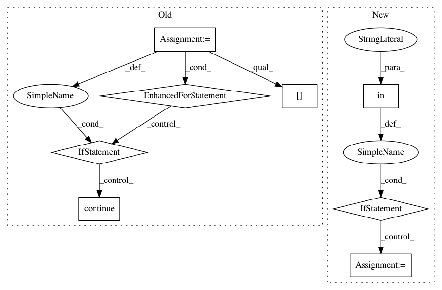

88e24ee24ff2152876552e7821e8b2f6dea0c313,pyannote/audio/pipeline/overlap_detection.py,OverlapDetection,loss,#OverlapDetection#Any#Any#,147
Before Change
// build overlap reference
reference = Timeline(uri=current_file["uri"])
turns = current_file["annotation"]
for track1, track2 in turns.co_iter(turns):
if track1 == track2:
continue
reference.add(track1[0] & track2[0])
reference = reference.support().to_annotation()
uem = get_annotated(current_file)
p = precision(reference, hypothesis, uem=uem)
After Change
precision = DetectionPrecision()
recall = DetectionRecall()
if "overlap_reference" in current_file:
overlap_reference = current_file["overlap_reference"]
else:
reference = current_file["annotation"]
overlap_reference = self.to_overlap(reference)
current_file["overlap_reference"] = overlap_reference
uem = get_annotated(current_file)
p = precision(overlap_reference, hypothesis, uem=uem)
r = recall(overlap_reference, hypothesis, uem=uem)
In pattern: SUPERPATTERN
Frequency: 3
Non-data size: 8
Instances
Project Name: pyannote/pyannote-audio
Commit Name: 88e24ee24ff2152876552e7821e8b2f6dea0c313
Time: 2020-02-27
Author: hbredin@users.noreply.github.com
File Name: pyannote/audio/pipeline/overlap_detection.py
Class Name: OverlapDetection
Method Name: loss
Project Name: studioml/studio
Commit Name: f31b7ad689b1435e76744af4ff443607643a37fd
Time: 2017-12-28
Author: peter.zhokhov@sentient.ai
File Name: studio/experiment.py
Class Name:
Method Name: create_experiment
Project Name: EducationalTestingService/skll
Commit Name: ca10c185d94470054d693f19e7691523dbe3ec55
Time: 2019-03-05
Author: jbiggs@ets.org
File Name: skll/data/readers.py
Class Name: NDJReader
Method Name: _sub_read